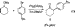

-Aryl
Ketones
-Aryl
Ketones
Web Release Date: February 4,
Highly Active and Selective Catalysts for the Formation of -Aryl
Ketones
Contribution from the Department of Chemistry, Massachusetts Institute of Technology, Cambridge, Massachusetts 02139
Received November 4, 1999
Abstract:
Bulky, electron-rich phosphine ligands with a biphenyl backbone, when combined with Pd(OAc)2,
give highly active catalysts for the -arylation of ketones. The ligand 2-methyl-2'-dicyclohexylphosphinobiphenyl
is particularly effective, and with 0.1-1.0 mol % Pd, a large variety of aryl halides and ketones react efficiently
and with high selectivity. For two types of substrates, the ligands BINAP and Xantphos are more effective
than the biphenyl-based ligands. It is also shown that K3PO4 can be used as the base in these reactions, and
that base-sensitive functional groups are better tolerated if this is used instead of NaOtBu or NaHMDS. In
some cases, -aryl ketones can be produced without adding a ligand to the reaction. Although the substrate
scope of the ligandless conditions is limited, some combinations react in high yield, and in one case, 100 000
turnovers were obtained. The results of experiments on the Pd-catalyzed arylation of diethyl malonate, cyclic
1,3-diketones, and nitroalkanes are also reported.
Finding an efficient and reliable method that forms a bond
between an arene and the carbon positioned - to a carbonyl is
a challenging problem in organic synthesis. While it has been
known for many years that such bonds can be formed by the
nucleophilic aromatic substitution (SNAR) reaction of a stabilized enolate with an aryl halide,1 these reactions have a serious
limitation, as one or more electron-withdrawing groups are
required as substituents on the arene.2 The reaction of an enolate
with a derivative of benzyne is an alternative to the SNAR
reaction.3 However, intermolecular reactions of substituted
benzynes with nucleophiles are often not regioselective,3 and
when the nucleophile is an enolate, intramolecular rearrangement
of the resulting -(2-lithiophenyl)ketone can occur faster than
protonolysis.4 More recently discovered5 was the SRN1 reaction,6,7-aryl ketone. A merit of this reaction is that electronically
neutral aryl halides, as well as those bearing electron-withdrawing or -donating substituents, can be used.8 However, only a
limited - to an enolate can be
abstracted by aryl radicals, thus converting the aryl halide to
the corresponding arene instead of the desired -aryl ketone.9b,11
- to an enolate can be
abstracted by aryl radicals, thus converting the aryl halide to
the corresponding arene instead of the desired -aryl ketone.9b,11
The lack of a general way to make -aryl carbonyl compounds prompted the development of a number of reagents for
that purpose.12,13 While many of these are quite effective, their
practicality is diminished by the time and cost needed to prepare
them in stoichiometric amounts. Furthermore, many of these
procedures do not use a carbonyl compound, but instead a less
readily available derivative (such as an -halo ketone).12g-n,r-t,13b
Catalytic methods that form such bonds are less common,14-21
and many of these require a Reformatsky reagent, -halo
carbonyl compound, silyl enol ether, or enol acetate.14,15 There
are relatively few catalytic transformations that, without special
reagents, directly arylate the position - to a carbonyl,16,17 and
until recently, there was only one report that described an
intermolecular ketone arylation-the Pd-catalyzed reaction of
-tetralone with 2-chloro-5-bromoanisole, for which no yield
was reported.18 Thus, it was of considerable interest when, in
the-aryl ketone was formed in small amounts when the sodium
salt of cyclohexanol was combined with an aryl bromide and a
Pd2(DBA)3/Tol-BINAP23 catalyst (eq 1).19
|  |
Presumably, in the reaction shown in eq 1, cyclohexanone is
formed by a Pd-catalyzed oxidation, deprotonated by unreacted
sodium alkoxide, and subsequently transformed to 1 by a Pd-catalyzed arylation. It was hoped that, if cyclohexanone was
used instead of cyclohexanol and its enolate was formed in situ,
conditions otherwise similar to those in eq 1 would produce 1
efficiently. Indeed, this goal was achieved, and a simple protocol
was developed that produced a variety of -aryl ketones by
simply heating a THF solution of an aryl bromide and a ketone
with sodium tert-butoxide, Pd2(DBA)3, and Tol-BINAP or
BINAP23 (eq 2)19
An important feature of this reaction is the selectivity that is observed for ketones with two enolizable positions. Thus, for 2-methyl-3-pentanone, arylation occurs exclusively at the methylene carbon. For 2-hexanone, arylation at the methyl carbon is preferred, with only very minor amounts of arylation at the methylene (selectivity 16:1). Also noteworthy is that, for the 12 substrate combinations reported, diarylation was only observed in five cases, and in no case was the ratio of mono:diarylation less than 7:1.
Nearly concurrent with this work, Hamann and Hartwig reported that Pd(DBA)2 and 1,1'-bis(di-o-tolylphosphino)ferrocene catalyzed the reaction of aryl bromides or iodobenzene with aromatic ketones or pinacolone,20 and Miura and co-workers reported that PdCl2 and Cs2CO3 converted 1,3 diphenylacetone and iodobenzene to 1,1,3,3-tetraphenylacetone.21a A subsequent report by the latter group showed that their procedure was useful for the reactions of aryl iodides or bromobenzene with benzyl ketones, but that arylations of 3-pentanone failed.21b,24 An extension of these methods was recently reported by Shaughnessy, Hamann, and Hartwig, who found that conditions similar to those in eq 2 could be used for the inter- and intramolecular arylations of amides.25 It has also been shown by Wang and Wu that 4-halophenyl alkyl ketones can be polymerized, and subsequently converted to poly(p-phenylenevinylidenes) by reduction with LAH and dehydration with H3PO4.26
The success of our conditions for the intermolecular -arylation of ketones inspired the development of asymmetric
versions. Indeed, it was found that by using (S)-BINAP, and
catalytic conditions derived from those in eq 2, compounds that
possess an all-carbon quartenary center - to a carbonyl can be
produced enantioselectively (eq 3).27
Recently, our efforts to devise more active catalysts for Pd-catalyzed amination reactions28 lead to the synthesis of the
sterically encumbered, electron rich phosphine ligand 3.29
Catalysts derived from 3 were exceptionally effective not only
in the amination reactions of aryl chlorides and aryl bromides,
but in Suzuki couplings as well.29 Furthermore, preliminary
experiments indicated that Pd catalysts derived from 3 were
highly effective for the -arylation of ketones.29 Thus, an aryl
bromide could be coupled at room temperature, and, for the
first time, an aryl chloride was used in a ketone arylation.
Subsequently, Kawatsura and Hartwig reported that catalysts
derived from the ligands 1,1-bis-(di-tert-butylphosphino)ferrocene, PtBu3, and PCy3 were also effective for the -arylation
of ketones.30 Using these ligands, both aryl chlorides and aryl
bromides could be coupled using 1-2 mol % Pd. For one
example-the reaction of bromobenzene and propiophenone-a turnover number as high as 20 000 was obtained. They also
found that, using a Pd catalyst from the above ligands and
NaOtBu as base, diethylmalonate and di-tert-butylmalonate
could be arylated by bromo- and chlorobenzene, respectively.
It should be noted that, despite more recent reports on the
-arylation of ketones,21b,30 our original protocol is the most
general with respect to substrate scope.19 In particular, ours are
the only procedures that do not require an aromatic or a benzylic
ketone to work well.19,29 Besides those used in our work, the
only aliphatic ketones that have been used are pinacolone (with
bromobenzene),20 2-methyl-3-pentanone (with 3-chloroanisole),30 and cyclohexanone (with bromobenzene).30 In the
first case, the yield was only 51%, and in the second case, the
selectivity for arylation of the methylene instead of the methine
carbon was only 6.7:1.
Subsequent experiments in our laboratories have shown that
Pd catalysts derived from commercially available, air-stable
ligands 4 and 5,31 in many cases, are even more active in
Suzuki32,33
Because ligands 4-7 are so effective at promoting the Pd-catalyzed reactions described above, we decided to test their
utility in the -arylation of ketones. We report here that the
combination of Pd(OAc)2 and ligand 6 is particularly effective
for catalyzing the reaction of many ketones with a variety of
aryl chlorides and aryl bromides. Also described are conditions
that permit the use of aryl halides that are functionalized with
base-sensitive groups, such as esters and nitriles. We describe
two situations in which ligands 4-7 are not effective, and show
that the bidentate ligands BINAP or Xantphos36 can be used in
their place. We further demonstrate that, for a limited number
of substrate combinations, it is not necessary to use any ligand
in order to catalyze the -arylation of a ketone. We show that
ligand 8, in combination with Pd(OAc)2 and K3PO4, gives a
catalyst that is effective for the arylation of diethyl malonate.
In addition, we report the first intermolecular Pd-catalyzed
arylations of 1,3-diketones,37
Before determining which ligand was best for reactions that
form -aryl ketones, control reactions were performed, in which
Pd(OAc)2 or Pd2(DBA)3 and no ligand were added. Surprisingly,
some substrate combinations could be coupled in good yields
and with high efficiency. These results are summarized in Table
1.
As is shown in Entry 1 of Table 1, the reaction of
bromobenzene and propiophenone was especially efficient under
these conditions. After 24 h, at 120  C in toluene, the number
of turnovers was 100 000, and the product was isolated in 74%
yield. The reaction of 5-bromo-m-xylene and propiophenone
was conducted at 80 C, and with either 1 mol % Pd(OAc)2 or
0.5 mol % Pd2(DBA)3, the -aryl ketone was obtained in 76-84% yield. A control reaction in which Pd was not added, but
was otherwise similar to the ones described in entry 2 of Table
1, gave no product after 17 h. Aryl bromides substituted by
methoxyls could also be used under these conditions (Table 1,
entries 3 and 4), as could pinacolone (Table 1, entry 4).
C in toluene, the number
of turnovers was 100 000, and the product was isolated in 74%
yield. The reaction of 5-bromo-m-xylene and propiophenone
was conducted at 80 C, and with either 1 mol % Pd(OAc)2 or
0.5 mol % Pd2(DBA)3, the -aryl ketone was obtained in 76-84% yield. A control reaction in which Pd was not added, but
was otherwise similar to the ones described in entry 2 of Table
1, gave no product after 17 h. Aryl bromides substituted by
methoxyls could also be used under these conditions (Table 1,
entries 3 and 4), as could pinacolone (Table 1, entry 4).
Unfortunately, the ligandless reaction conditions were only
suitable for a limited number of substrate combinations. For
example, cyclohexanone and 4-tert-butylbromobenzene, when
heated at 70 C for 14 h in either THF or toluene with NaOtBu
and 1 mol % Pd2(DBA)3, gave only traces of product. The
reaction of 5-bromo-m-xylene and 2-methyl-3-pentanone with
NaOtBu and 1 mol % Pd(OAc)2 gave, after heating in toluene
at 80 C for 20 h, xylene and the coupling product in a ~1:1
ratio, as determined by GC analysis. The yield for the reaction
of propiophenone with 2-bromotoluene (46%, Table 1, entry
5) was significantly lower than that obtained when 5-bromo-m-xylene was the aryl halide (Table 1, entry 2), and the reaction
of propiophenone, 2-bromo-p-xylene, and 0.1 mol % Pd(OAc)2
gave, after 21 h, the -aryl ketone and p-xylene in a 1.6:1.0
ratio. Furthermore, it does not appear that these conditions can
be extended to aryl chlorides, as 4-chlorotoluene and propiophenone gave, after 24 h in toluene at 80 C with either 1 mol %
Pd(OAc)2 or 0.5 mol % Pd2(DBA)3, less than 1% of the desired
product.
Efforts were thus directed toward finding a catalytic system
that would generally and efficiently couple aryl halides with a
wide variety of ketones. While the commercially available
ligands 4 and 5 promoted the -arylations of some ketones
(Table 2, entries 1-3), in other cases, catalysts from these
ligands were not as efficient as those from 3. For example, while
the reaction of -tetralone with 2-chloro-p-xylene using 1.0 mol
% 3 gave the desired -aryl ketone in a yield of 76%, a similar
reaction that used the ligand 4 produced substantial amounts of
p-xylene (the ratio of product: p-xylene was 3:1). To see if
these differences resulted from the ability of the dimethylamino
group of 3 to coordinate to Pd, the ligand 6 was tested, because
it is sterically more similar to 3 than is 4 or 5. The reaction in
entry 4 did indeed occur smoothly when 6 was the ligand, and
only 0.1 mol % Pd was needed in order to obtain the product
in 93% yield. The result implied that Pd-catalysts derived from
6 might be highly active for the -arylation of ketones. The
combination of Pd(OAc)2/6 was therefore tested for a number
of arylation reactions, and Table 2 shows that this was extremely
effective. Many substrates could be coupled using only 0.1 mol
% Pd(OAc)2 and 0.2 mol % 6, and no more than 1 mol % Pd
was required for any of the transformations in Table 2. The
reactions described in entries 3, 4, 7-9, 11, and 12 were also
run using commercially available ligands 4 and 5, under
conditions that were otherwise identical, except that higher
catalyst loadings were sometimes used. Compared to the
reactions catalyzed by Pd(OAc)2/6, the yields and/or the turnover
numbers were lower.
Table 2 shows that a diverse group of aryl halides and ketones
can be coupled successfully. Examples include those in which
aryl halide is substituted by an alkyl, methoxyl, hydroxyl,
dimethylamino, 1,3-dioxolano, nitrile, and ester functions. Also
included are examples in which the arene has either one (Table
2, entry 4) or two (Table 2, entry 12) methyl groups, or a
methoxyl group (Table 2, entry 13), positioned ortho to the
halogen. Both aliphatic and aromatic ketones can be used, and
these can either be acyclic or cyclic. Table 2 also shows that
secondary, tertiary, and quartenary centers can be prepared, that
a methoxyl group can be positioned - to the carbonyl (Table
2, entry 11), and that five-, six-, and seven-membered ring
ketones can be used successfully. We note, however, that
cyclopentanone was not coupled successfully under these
conditions, as this ketone was consumed too quickly in a
competing aldol condensation.
In reactions of 2-methyl-3-pentanone, two regioisomers can
be formed. In the reaction of this ketone with either 4-n-butyl-chlorobenzene or N,N-dimethyl-4-bromoaniline, the preference
for arylation at the methylene instead of the methine carbon is
20:1 (Table 2, entries 5 and 7). Selectivity for monoarylation
instead of diarylation is also high. The least selective case is
that of 4-chloroanisole and 3-pentanone (Table 2, entry 10),
for which the ratio of mono/diarylation was 7:1 when 2 equiv
of ketone are used. For the other substrate combinations in Table
2, the selectivity for monoarylation was greater than 20:1. In
the reaction of acetophenone and 5-bromo-m-xylene (Table 2,
entry 6), no diarylated product was observed when the recommendation of Kawatsura and Hartwig-the use of 2 equiv of
NaOtBu per equiv of ketone30-was followed. This reaction was
cleanest at room temperature, using 1 mol % Pd and 2 mol %
7. A similar reaction using ligand 6 gave, in addition to the
desired product, products derived from aldol condensation of
the ketone (~5% as estimated by GC). At 50 C, acetophenone
and 5-bromo-m-xylene could be coupled in 74% yield using
0.25 mol % Pd(OAc)2/ 0.5 mol % 7.
For the reactions in entries 14-16 of Table 2, the choice of base was important. When NaOtBu was used, the major products, as determined by GC/MS, were those from Claisen-type condensations of the ketone enolate with the ester or nitrile functions of the aryl halides. Also, when NaOtBu was the base for the reactions in entries 15 and 16, significant amounts of ethyl and methyl benzoate were formed, respectively, presumably because the condensation reactions produce sodium ethoxide and sodium methoxide, which are known to reduce arylhalides under Pd catalysis.39 These undesired products were not observed, however, when NaHMDS was the base, provided that it was not used in an excess and that, for the reaction of 4-chlorobenzonitrile with propiophenone (Table 2, entry 14), the base and the ketone were mixed prior to adding the aryl halide.
Despite the usefulness of the ligands 3-7 for the preparation
of many -aryl ketones, not all types of substrates react
effectively. The arylation reactions of ketones that have both
enolizable methyl and methylene groups (e.g., 2-hexanone) are
not selective. Furthermore, the conditions of entries 14-16 of
Table 2, which allow aryl halides with ester or nitrile functions
to be coupled with aromatic ketones, fail to give product when
applied to aliphatic ketones and give complex mixtures instead.
As was noted in the Introduction, 2-hexanone can be coupled with N-(4-bromophenyl)-benzophenone imine if a BINAP/Pd2(DBA)3 catalyst is used.19 Because this is the only reported example in which a ketone with both an enolizable methyl and methylene group is selectively arylated by Pd catalysis, we tested to see if these conditions were general for other such combinations of substrates. As is shown in entry 1 of Table 3, 4-bromoveratrole and 4-methyl-2-pentanone react under these conditions to give in 72% yield the product of arylation at the methyl group, and the selectivity for substitution at that position instead of the methylene was 12/1. A survey of other bidentate ligands indicated that high selectivities could also be obtained when Pd2(DBA)3/Xantphos was the catalyst, and that, compared to reactions that use BINAP as the supporting ligand, a relatively low catalyst loading can be used. Thus, the coupling product of 4-methyl-2-pentanone and 4-bromoveratrole was obtained in 72% yield when 0.5 mol % Pd/0.6 mol % Xantphos was used (Table 3, entry 1). In contrast, a similar reaction that used 0.5 mol % Pd and 0.6 mol % BINAP gave significant amounts of products from the aldol condensation of 4-methyl-2-pentanone. The reaction of 2-hexanone with 3-fluoro-bromobenzene, when catalyzed by 1.0 mol % Pd/ 1.2 mol % Xantphos, proceeded in 74% yield, and the preference for monoarylation instead of diarylation was 25/1 (Table 3, entry 2). The regioisomer of the product, that would have been produced if substitution at the methylene carbon had occurred, was not detected. A similar reaction in which BINAP was used instead of Xantphos gave the product in only ~25% yield, as estimated by GC. Again, the major contaminants were derived from the competing aldol condensation of the ketone.
The use of a catalyst based on Xantphos and either NaHMDS or NaOtBu allows aryl halides that are functionalized by some electron-withdrawing groups to couple with aliphatic ketones. Thus, either N,N-diethyl-4-bromobenzamide or tert-butyl-4-bromobenzoate reacted with 2-methyl-3-pentanone, using only 0.2 mol % Pd/0.22 mol % Xantphos, in 74 and 67% yields, respectively. For the reaction of tert-butyl-4-bromobenzoate, the selectivity for arylation at the methylene instead of the methine carbon was 50:1, and for N,N-diethyl-4-bromobenzamide, only one regioisomer was detected. However, these conditions are not general for aryl halides substituted by all electron-withdrawing groups. Thus, the major product of the reaction of methyl-3-bromobenzoate and 3-methyl-2-pentanone was methyl benzoate. Also, substantial amounts of benzonitrile were formed in the reaction of cyclohexanone and 3-bromobenzonitrile.
We hoped that a wider range of base-sensitive groups could
be employed in the ketone arylation reaction if, instead of
NaOtBu or NaHMDS, a mild base was used. After some
experimentation, we determined that potassium phosphate, in
either THF or toluene solvent, is effective for this purpose. As
is shown in entries 1 and 4 of Table 4, aryl bromides react with
ketones in good yield when K3PO4 is the base and Xantphos/Pd2(DBA)3 is the catalyst precursor. Table 4 also shows that
ligand 6 can be used in conjunction with K3PO4. Cycloheptanone
and 4-bromo-tert-butylbenzene can be coupled in 81% yield
when Pd(OAc)2/6 is the catalyst precursor (Table 4, entry 2).
Cyclohexanone reacts with methyl-4-chlorobenzoate to give the
product of a single arylation in 70% yield when Pd(OAc)2/6 is
used (Table 4, entry 5). However, under these conditions, the
reaction of cyclohexanone with methyl-4-bromobenzoate gives
substantial amounts of methyl benzoate and biphenyl-4,4'-dicarboxylic acid dimethyl ester. This reaction is successful if
Pd2(DBA)3/Xantphos is used instead of Pd(OAc)2/6-the -aryl
ketone was isolated in 74% yield.
Preliminary investigations, to see if the methods used here
to arylate ketones could be extended to other stabilized
carbanions, were begun. A Pd catalyst based on 8 and K3PO4
was effective for the reaction of diethyl malonate with 4-bromo-tert-butylbenzene (Table 5, entry 1). The arylation product was
isolated in 92% yield, provided that 2 equiv of K3PO4 were
used per equiv of malonate. When less base was added, the
reaction did not go to completion. The combination of Pd(OAc)2/8/2.3 equiv K3PO4 was also suitable for the arylations
of cyclohexane-1,3-dione and cyclopentane-1,3-dione (Table 5,
entries 2-4). However, our initial attempts to use acetylacetone
under similar reactions were unsuccessful, and only the starting
materials were recovered. The failure may be related to the
ability of acetylacetone to form stable complexes with palladium.40 The reaction of nitroethane and 4-bromo-tert-butylbenzene went to completion when K3PO4 was the base and a
relatively high catalyst loading (5 mol % Pd/10 mol % 8) was
used (Table 5, entry 5). A similar reaction that used ligand 4
did not go to completion, and when ligand 6 was used, no
product was formed. A more active system resulted when
NaOtBu was used instead of K3PO4-the reaction could be run
at 95 C, only 3 mol % Pd(OAc)2 was needed, and ligand 4
could be used in place of 8. (Table 5, entry 5). Also, when
NaOtBu is the base, 4-chlorotoluene can be coupled with
1-nitropropane using 3 mol % Pd(OAc)2 and 6 mol % 8 (Table
5, entry 6).
The procedures introduced here for the -arylation of ketones
significantly increase the scope of substrates that can be used.
The selection of ligand and base is extremely important, and
the optimal catalytic system depends both on the nature of the
aryl halide and ketone. It is shown that some substrate
combinations react even when no ligand is added to the
reactions. This procedure has the advantage of simplicity and
low cost and should therefore prove useful for a limited class
of substrates.
As was noted in the Introduction, Kawatsura and Hartwig
found that, for the Pd-catalyzed reaction of propiophenone and
bromobenzene, a high number of turnovers (20 000) were
obtained when either P(tBu)3 or 1,1'-bis-(di-tert-butylphosphino)ferrocene was used as the supporting ligand.30 The
impressive efficiency and stability of the catalyst was attributed
to the use of these ligands, despite the lack of high turnover
numbers for other substrate combinations (no less than 1 mol
% Pd was used in the other reactions reported). We show here
that 100 000 turnovers can be obtained for the reaction of
bromobenzene and propiophenone without adding any ligand
to the reaction, although a higher temperature (120 C instead
of 60 C) was used than for reactions in which a ligand is
added.30 These turnover numbers are considerably higher than
those obtained for other combinations of substrates. Thus, the
reaction of propiophenone and bromobenzene appears to be
exceptionally facile, and the high turnover numbers obtained
in the absence of a ligand imply that, in this instance, the
remarkable efficacy of the catalyst is not derived from the
phosphine but is instead related to the properties of the ketone.
These results exemplify the danger of drawing conclusions about
the activity and stability of a catalytic system when only one
reaction is studied at low catalyst loadings. An analogous
reaction is the Suzuki coupling of 4-bromoacetophenone with
phenylboronic acid: a combination for which turnover numbers
as high as 1 × 106 were obtained in the past.41 We recently
reported that 1 × 105 turnovers can be obtained in this reaction
when no ligand is added.33 Although even higher numbers of
turnovers (1 × 108) can be obtained when Pd(OAc)2/4 is used,33
it is clear that the exceptional effectiveness of the catalyst in
this particular reaction is related to the substrates that are used,
and that, to truly develop Pd catalysts that are highly active, a
wide range of substrates must be studied.
The reaction of propiophenone and bromobenzene excluded,
the Pd catalysts based on ligands 3-7, and ligand 6 in particular,
are considerably more active for the -arylation of ketones than
the catalytic systems that have been reported previously.20-22,29,30
Although it is unclear why subtle variances in the structures of
these ligands cause significant differences in the effectiveness
of their catalysts (e.g., the differences between catalysts based
on 6 and 5), we believe that the activity of this class of ligands
can be explained as follows: the ligands are electronically rich
and sterically encumbered, and these attributes should promote
the oxidative addition42 and reductive elimination steps in the
catalytic cycle, respectively. Furthermore, the biphenyl moiety
is believed to stabilize Pd-complexes of these ligands, and to
further facilitate the reductive elimination step.33,34 Possibly, the
interaction between the biphenyl and the metal center is similar
to that between the metal and the binaphthyl components in
Pd(II) complexes of MOP and MAP.43
A likely catalytic cycle for ketone arylations which use ligands 4-7 is shown in Scheme 1. It is possible that two phosphines coordinate to the Pd centers of intermediates A and B, provided that their substitution is trans with respect to the metal.44 However, a study by Kawatsura and Hartwig suggests that, for bulky, electron-rich phosphines, only one phosphine binds to the metal center of aryl palladium enolate intermediates,30 and mechanistic studies of the amination reaction using ligand 4 suggest that monophosphine complexes are involved. Analogously, we feel that when ligands 4-7 are used, the Pd:phosphine ratio for intermediates A and B is 1:1.34 We also believe that a similar mechanism operates when 3 is the ligand. Circumstantial evidence suggests that binding of the dimethylamino group of 3 to Pd is not essential for the catalytic process and, in fact, may not occur at all. This is implied by the similarities between ligands 3, 6, and 7 in the Pd-catalyzed ketone arylations reported here, as well as in Suzuki33 and amination reactions.34
| Scheme 1 |
For reactions in which either BINAP or Xantphos is the
supporting ligand, we believe that the mechanism is similar to
that in Scheme 1, except that the ligand bound to Pd in
intermediates A and B is chelating.45,46 That high selectivity is
obtained in the reactions of relatively unhindered aliphatic
ketones, such as 2-hexanone, but not with the monodentate
phosphines
For the first time, it was shown that a weak base (K3PO4)
can be used in Pd-catalyzed ketone arylations and that the use
of this base expands the scope of substrates that can be coupled.
The effectiveness of K3PO4 is somewhat surprising, since the
pKa of K2HPO4 (~12)47 - to the carbonyl would be increased,
and subsequent deprotonation and formation of intermediate B
would be facile.
Preliminary results show that Pd catalysts based on 8 can be used to arylate diethyl malonate, cyclic 1,3-diketones, and nitroalkanes. A merit of the procedure reported here for malonate arylation is that K3PO4 is used instead of an alkoxide base,30 and problems that could result from alcoholysis of the product should therefore be avoided.49 A catalytic method for the intermolecular arylation of nitroalkanes has not been reported previously,38 and Pd-catalysis has not been used previously for the intermolecular arylation of cyclic 1,3-diketones. The only precedents for the catalytic intermolecular arylation of 1,3-diketones use a copper catalyst,13a,16b,c and there is only one example in which a carboxylic acid function is not required to be positioned ortho- to the halogen on the arene.16c Further development of the arylations of these and other carbanions will be the subject of a future study.
The arylation procedures introduced here are easy to carry out. All of the ligands used in this study can be weighed and stored in the air, and the only precaution taken is to store the ligands in a desiccator. A glovebox was used only for reactions in which NaHMDS was the base.50 Despite the high utility of ligands 3, 6, 7, and 8 in the arylations of ketones and other carbanions, these ligands have the disadvantage that, unlike 4 and 5, they are not commercially available,31 and their syntheses require 2-4 steps. New one-step methods for the synthesis of these ligands are currently under development in our laboratories51 and will be the subject of a future publication.
Several procedures for the Pd-catalyzed -arylation of ketones
are described. A protocol in which no ligand is added to the
reaction mixture is suitable for a limited class of substrates,
and for one substrate combination, remarkably high turnover
numbers are obtained. Catalysts based on ligands 3-7, and
ligand 6 in particular, are highly active for ketone arylations
and have a substrate scope that is large. For two classes of
substrates, catalysts derived from 3-7 are less effective than
those from the bidentate ligands BINAP and Xantphos. Of these,
the catalysts based on Xantphos are more active. Procedures in
which K3PO4 is the base are described, and these conditions
were more generally compatible with base sensitive functional
groups, such as esters and nitriles. Also described is a procedure
for the arylation of diethyl malonate, the first intermolecular
Pd-catalyzed protocol for the arylation of 1,3-diketones, and
the first catalytic procedure for the arylation of nitroalkanes.
For these reactions, catalysts based on 4 and 8 are found to be
effective.
General Considerations All reactions were carried out in glassware that was flame-dried under vacuum, and cooled under argon. Elemental analyses were performed by Atlantic Microlabs, Inc, Norcross GA. THF was distilled from benzophenone ketyl under an atmosphere of argon. Toluene was distilled from molten sodium under an atmosphere of nitrogen. Ketones and aryl halides were purchased from commercial sources and used without purification. Ligands 3,29 4,34,35 5-7,34 and Xantphos36a were prepared as described previously. Racemic BINAP, palladium acetate, tris(dibenzylideneacetone)dipalladium (0), and sodium hexamethyldisilazane (NaHMDS) were purchased from Strem Chemical Company. Sodium tert-butoxide was purchased from Aldrich Chemical Co., and the bulk of the material was stored under nitrogen in a Vacuum Atmospheres glovebox. Small portions ( ~1-2 g) were removed from the glovebox and stored in glass vials, and then kept in the air in desiccators filled with anhydrous calcium sulfate. Tribasic potassium phosphate was purchased from Fluka Chemical Company. All materials were weighed in the air, except for NaHMDS, which was weighed and added to the reaction flask in a glovebox. IR spectra reported in this paper were obtained by placing neat samples directly on the DiComp probe of an ASI REACTIR in situ IR instrument. Yields in Tables 1-5 refer to isolated yields (average of 2 runs) of compounds estimated to be 95% pure as determined by 1H NMR, GC, and combustion analysis. Compounds that are described more than once in the same table were completely characterized once. Other samples of these compounds were characterized by comparing their 1H NMR spectra to those of the fully characterized product, and their purity was confirmed by GC analysis. The procedures described in this section are representative, and thus the yields may differ from those in Tables 1-5.
2-(DiC for 4.5 h. The reaction
was cooled to room temperature; as the flask was flushed with argon,
the septum was removed, and CuCl (661 mg, 6.68 mmol) was added.
The septum was replaced, and chloro-di-tert-butylphosphine (1.38 mL,
7.28 mmol) was injected. The flask was then heated at 65 C for 16 h.
After cooling to room temperature, the mixture was diluted with ~10
mL of a 1:1 mixture of ethyl acetate/hexane, filtered on a Buchner
funnel, and rinsed with 240 mL of 1:1 ethyl acetate/hexane. Ether (50
mL) and concentrated NH4OH were sequentially added to the filtrate,
which was stirred for 1 h at room temperature, and then transferred to
a separatory funnel. The organic layer was separated, and the aqueous
layer was extracted twice with additional ether. The organics were
combined, washed sequentially with concentrated NH4OH and brine,
dried (Na2SO4), filtered, and concentrated. Crystallization of the residue
gave 314 mg of the title compound as white crystals, mp = 86-87
C. Chromatography of the mother
liquor (the eluant was 98:2 hexane:ethyl acetate) provided an additional
319 mg of the title compound. The combined yield for the crystallization
and the chromatography was 33%. 1H NMR (C6D6, 300 MHz) 7.77-7.82 (m, 1H), 7.34-7.28
(m, 2H), 7.22-7.12 (m, 6H), 2.18 (s, 3H), 1.14 (d, 18H, JH-P = 11.4
Hz) ppm; 13C NMR (75 MHz, CDCl3) 150.3 (d, JC-P = 33.1 Hz), 142.8
(d, JC-P = 6.9 Hz), 136.1 (d, JC-P = 27.5 Hz), 135.5, 135.5 (d, JC-P
= 11.5 Hz), 131.6 (d, JC-P = 3.4 Hz), 130.8 (d, JC-P = 6.9 Hz), 129.5,
128.3, 126.9, 125.7, 124.2, 33.1 (d, JC-P = 24.0 Hz), 32.4 (d, JC-P =
25.3 Hz), 31.2 (d, JC-P = 14.6 Hz), 30.8 (d, JC-P = 14.7 Hz), 20.8 (d,
JC-P = 3.4 Hz) ppm. 31P NMR (C6D6, 121 MHz) 20.0 (s) ppm. IR
(neat, cm-1) 2981, 2960, 2941, 2890, 2856, 1463, 1459, 1360, 1171.
Calcd for C21H29P: C, 80.73; H, 9.36. Found: C, 80.62; H, 9.46.
General Procedure A: Ketone Arylations without Ligand. An
oven-dried, resealable Schlenk tube containing a stirbar was capped
with a rubber septum, flame-dried under vacuum, and then backfilled
with argon and cooled to room temperature. The tube was then charged
with sodium tert-butoxide (125 mg, 1.3 mmol) and Pd(OAc)2 (2.2 mg,
0.01 mmol). The septum was replaced, and the tube was again evacuated
and backfilled with argon. Toluene (1 mL), aryl halide (1.0 mmol),
and ketone (1.2 mmol) were sequentially injected, and under a flow of
argon, the septum was replaced by a Teflon screw cap. The tube was
sealed, and the mixture was stirred and heated in an oil bath at 80 C
for the time specified. The contents of the tube were then partitioned
between ether and water. The aqueous layer was separated and extracted
three times with additional ether. The organics were then combined,
dried (Na2SO4), filtered, and concentrated under reduced pressure, and
the residue was chromatographed on silica gel.
-Phenylpropiophenone (Table 1, Entry 1). An oven-dried,
resealable Schlenk tube containing a stirbar was capped with a rubber
septum, flame-dried under vacuum, and then backfilled with argon and
cooled to room temperature. The tube was then charged with sodium
tert-butoxide (125 mg, 1.3 mmol), the septum replaced, and the tube
again evacuated and backfilled with argon. One milliliter of a solution
of Pd(OAc)2 (1 × 10-5 M in toluene), bromobenzene (157 mg, 1.0
mmol), and propiophenone (161 mg, 1.2 mmol) were sequentially
injected, and under a flow of argon, the septum was replaced with a
Teflon screw cap. The tube was sealed and heated in an oil bath at 120
C, with stirring, for 24 h. The reaction was worked up as in general
procedure A. Chromatography (the eluant was 4:1 toluene:hexane) gave
151 mg (72%) of the title compound.
-(3,5-Dimethylphenyl)propiophenone (Table 1, Entry 2). General
procedure A was followed. The yield was 198 mg (83%). A similar
reaction, in which Pd2(DBA)3 (4.6 mg, 0.005 mmol) was used in place
of Pd(OAc)2 gave 185 mg (78%) of the title compound.
-(4-Methoxyphenyl)propiophenone (Table 1, Entry 3). General
procedure A was followed. The yield was 216 mg (90%).
-(3-Methoxyphenyl)pinacolone (Table 1, Entry 4). General
procedure A was followed. The yield was 146 mg (71%).
-(2-Methylphenyl)propiophenone (Table 1, Entry 5). General
procedure A was followed. The yield was 100 mg (44%).
General Procedure B: Ketone Arylations with Ligands 3-7. An oven-dried, resealable Schlenk tube containing a stirbar was capped with a rubber septum, flame-dried under vacuum, and then backfilled with argon and cooled to room temperature. The tube was then charged with sodium tert-butoxide (125 mg, 1.3 mmol), Pd(OAc)2 (2.2 mg, 0.01 mmol), and the specified ligand (0.02 mmol). The septum was replaced with a Teflon screw cap, and the tube was again evacuated and backfilled with argon. The solvent (1 mL), aryl halide (1.0 mmol), and ketone (1.2 mmol) were sequentially injected, and under a flow of argon, the septum was replaced by a Teflon screw cap. The tube was sealed, and the mixture was stirred and heated for the time specified in Table 2. The reaction was worked up as in general procedure A.
General Procedure C: Ketone Arylations at Low Catalyst
Loadings with Ligand 6. An oven-dried, resealable Schlenk tube
containing a stirbar was capped with a rubber septum, flame-dried under
vacuum, and then backfilled with argon and cooled to room temperature.
The tube was then charged with sodium tert-butoxide (125 mg, 1.3
mmol), the septum was replaced, and the tube was again evacuated
and backfilled with argon. In a separate flask, a solution of Pd(OAc)2
(2.2 mg, 0.01 mmol) and ligand 6 (7.3 mg, 0.02 mmol) in 10 mL of
the specified solvent was prepared and heated for several minutes at
60 C to completely dissolve the Pd(OAc)2. This solution (1 mL), the
aryl halide (1.0 mmol), and the ketone (1.2 mmol) were sequentially
injected into the tube, and under a flow of argon, the septum was
replaced by a Teflon screw cap. The tube was sealed, and the mixture
was stirred and heated for the time specified in Table 2. The mixture
was worked up as in general procedure A.
-(4-Methylphenyl)propiophenone (Table 2, Entry 1). General
procedure B was followed. The ligand was 4, and the yield was 216
mg (96%).
-(4-Methoxyphenyl)isobutyrophenone (Table 2, Entry 2). General procedure B was followed, except that 2.5 mL of solvent was used.
The ligand was 4, and the yield was 194 mg (76%).
-(3-(1,3-Dioxolan-2-yl)-phenyl)cycloheptanone (Table 2, Entry
3). General procedure C was followed, except that 2.0 mmol of
cycloheptanone and 2.2 mmol of NaOtBu were used. The yield was
200 mg (77%). A similar experiment, using 2 mol % 5/1 mol %
Pd(OAc)2 gave 178 mg (68%) of the title compound.
-(2,5-Dimethylphenyl)--tetralone (Table 2, Entry 4). General
procedure C was followed. The yield was 239 mg (96%). A similar
experiment, using 2 mol % 3/1 mol % Pd(OAc)2 gave 200 mg (80%)
of the title compound.
2-(4-
-(3,5-Dimethylphenyl)acetophenone (Table 2, Entry 6). General
procedure B was followed, except that ligand 7 was used instead of 6,
and 2.5 mL of toluene and 2.5 equiv of NaOtBu were used. The yield
was 200 mg (89%). If general procedure C was followed, using 2.5
equiv of NaOtBu, and 2.5 mL of a toluene solution that was 0.1 M in
Pd(OAc)2 and 0.2 M in 7, 165 mg (74%) of the title compound was
obtained.
2-(4-
2-(3-Hydroxyphenyl)-3-pentanone (Table 2, Entry 8). An oven-dried, resealable Schlenk tube containing a stirbar was capped with a
rubber septum, flame-dried under vacuum, and then backfilled with
argon and cooled to room temperature. The tube was then charged with
sodium tert-butoxide (125 mg, 1.3 mmol), the septum was replaced,
and the tube was again evacuated and backfilled with argon. In a
separate flask, a solution of Pd(OAc)2 (2.2 mg, 0.01 mmol) and ligand
6 (7.3 mg, 0.02 mmol) in 5 mL of the THF was prepared and heated
for several minutes at 60 C to completely dissolve the Pd(OAc)2. This
solution (0.5 mL), a solution of 3-bromophenol in THF (0.5 mL of a
2.0 M solution), and 3-pentanone (2.0 mmol) were sequentially injected,
and under a flow of argon, the septum was replaced. The tube was
sealed, and the mixture was stirred and heated for 24 h at 70 C. The
mixture was worked up as in general procedure A. Chromatography
gave 157 mg (88%) of the title compound.
2,4-Dimethyl-2-(4-
2-(4-Methoxyphenyl)-3-pentanone (Table 2, Entry 10). General procedure C was followed, except that 2.0 equiv of ketone were used. The yield was 144 mg (75%).
-Methoxy--(4-
2,2-Dimethyl-5-(2,6-dimethylphenyl)cyclopentanone (Table 2, Entry 12). General procedure B was followed, except that 0.005 mmol Pd(OAc)2 and 0.01 mmol of 6 were used. The yield was 145 mg (67%).
-(2-Methoxyphenyl)-2,5-dimethoxyacetophenone (Table 2, Entry 13). General procedure B was followed. The ligand was 6, and the
yield was 263 mg (92%).
-(4-Cyanophenyl)propiophenone (Table 2, Entry 14). An oven-dried, resealable Schlenk tube containing a stirbar was capped with a
rubber septum, evacuated, and cooled under argon. The tube was then
charged with Pd(OAc)2 (2.3 mg, 0.01 mmol) and 7 (8.0 mg, 0.02 mmol).
The tube was sealed and transferred to a glovebox. Propiophenone (160
 L, 1.2 mmol) was then injected, followed by the addition of NaHMDS
(208 mg, 1.1 mmol) and 2 mL of toluene. After stirring at room
temperature for 20 min, the screw cap was replaced with a septum, a
solution of 4-chlorobenzonitrile (138 mg, 1.0 mmol) in toluene (1 mL)
was injected, and the septum was replaced by a Teflon screw cap. The
tube was then sealed and heated in an oil bath for 18 h at 80 C.
Chromatography gave 192 mg (82%) of the title compound.
L, 1.2 mmol) was then injected, followed by the addition of NaHMDS
(208 mg, 1.1 mmol) and 2 mL of toluene. After stirring at room
temperature for 20 min, the screw cap was replaced with a septum, a
solution of 4-chlorobenzonitrile (138 mg, 1.0 mmol) in toluene (1 mL)
was injected, and the septum was replaced by a Teflon screw cap. The
tube was then sealed and heated in an oil bath for 18 h at 80 C.
Chromatography gave 192 mg (82%) of the title compound.
-(4-Carboxyphenyl)--tetralone ethyl ester (Table 2, Entry 15).
In a glovebox, a resealable Schlenk tube was charged with NaHMDS
(213 mg, 1.1 mmol). The tube was sealed with a Teflon screw cap and
brought out of the box. Under a flow of argon, the screw cap was
replaced by a septum. In a separate flask, a solution of Pd(OAc)2 (2.3
mg, 0.01 mmol) and ligand 6 (8 mg, 0.022 mmol) in 5 mL of the toluene
was prepared, and stirred for 10 min at room temperature to dissolve
the Pd(OAc)2. This solution (1 mL), ethyl 4-bromobenzoate (1.0 mmol)
and -tetralone
(1.2 mmol) were sequentially injected into the tube, and under a flow of
argon, the septum was replaced by a Teflon screw cap. The tube was sealed,
and the mixture was stirred and heated for 24h. The mixture was worked up
as in general procedure A. Chromatography gave 250 mg (85%) of the title
compound as a white solid.
-(4-Carboxyphenyl)propiophenone methyl ester (Table 2, Entry
16). General procedure B was followed, except that NaHMDS (1.1
equiv), which was added to the Schlenk tube in the glovebox, was
used instead of NaOtBu. The ligand was 7, and the yield was 220 mg
(82%).
General Procedure D: Ketone Arylations with Either
3-(3,4-Dimethoxyphenyl)-4-methyl-2-pentanone (Table 3, Entry 1). General Procedure D was followed, using Xantphos (3.4 mg, 0.006 mmol) and Pd2DBA3 (2.3 mg, 0.0025 mmol). The yield was 170 mg (72%). For the reaction in which rac-BINAP was used instead of Xantphos, conditions were similar to those above, except that the following amounts were used: 4-methyl-2-pentanone (0.6 mmol), 4-bromoveratrole (0.5 mmol), NaOtBu (0.65 mmol), rac-BINAP (3.6 mmol), Pd2(DBA)3 (1.5 mmol), and THF (3 mL). The yield of the title compound was 83 mg (70%).
1-(3-Fluorophenyl)-2-hexanone (Table 3, Entry 2). General Procedure D was followed, using Xantphos (6.8 mg, 0.012 mmol) and Pd2(DBA)3 (4.6 mg, 0.005 mmol). The yield was 136 mg (70%).
-(4-Carboxyphenyl)-4-methyl-3-pentanone L, 1 mmol)
were sequentially injected into the tube, and under a flow of argon,
the septum was replaced by the Teflon screw cap. The tube was sealed,
and the mixture was stirred and heated at 80 C. The mixture was
worked up as in general procedure A. The yield after chromotagraphy
was 182 mg (66%).
2-(4-C. The mixture was worked up as in general procedure A. Chromatography gave 201 mg (73%) of the title compound.
General Procedure E: Ketone Arylations with K3PO4 as the Base. An oven-dried, resealable Schlenk tube containing a stirbar was charged with Pd2(DBA)3 (4.6 mg, 0.005 mmol) or Pd(OAc)2 (2.3 mg, 0.01 mmol), Xantphos (6.4 mg, 0.011 mmol) or ligand 6 (8.0 mg, 0.022 mmol), and K3PO4 (490 mg, 2.3 mmol). The tube was then capped with a rubber septum, evacuated, and backfilled with argon. Solvent, ketone (1.2 mmol), and aryl halide (1.0 mmol) were sequentially injected. Under a flow of argon, the septum was replaced with a Teflon screw cap. The tube was sealed, and the mixture was stirred and heated for the time specified in Table 4. The mixture was diluted with ethyl acetate, filtered, and concentrated under reduced pressure, and the residue was chromatographed on silica gel.
-(4-Cyanophenyl)cycloheptanone (Table 4, Entry 1). General
procedure E was followed. The Pd source was Pd2(DBA)3, and the
ligand was Xantphos. The yield was 153 mg (72%).
-(4-
-(4-Carboxyphenyl)--tetralone Ethyl Ester (Table 4, Entry 3).
An oven-dried, resealable Schlenk tube was evacuated and cooled under
argon. The tube was then charged with K3PO4 (276 mg, 1.3 mmol),
capped with a rubber septum, evacuated, and backfilled with argon. In
a separate flask, a solution of Pd(OAc)2 (2.3 mg, 0.01 mmol) and ligand
6 (8.0 mg, 0.022 mmol) in 5 mL of toluene was prepared, and stirred
for 10 min at room temperature to dissolve the Pd(OAc)2. This solution
(1 mL), ethyl 4-bromobenzoate (1.0 mmol), and -tetralone (1.2 mmol)
were sequentially injected into the tube, and under a flow of argon,
the septum was replaced by a Teflon screw cap. The tube was sealed,
and the mixture was stirred and heated for 23h. The mixture was worked
up as in general procedure A. The yield after chromotagraphy was 265
mg (90%). Spectral data were identical to those obtained using
NaHMDS as the base (Table 2, Entry 15).
-(4-Carboxyphenyl)cyclohexanone Methyl Ester: From Ethyl
4-Bromobenzoate (Table 4, Entry 4). General procedure E was
followed, except that the ethyl 4-bromobenzoate was added to the
reaction tube with the other solids, prior to the addition of solvent.
The Pd source was Pd2(DBA)3, and the ligand was Xantphos. The yield
was 174 mg (75%).
From Ethyl 4-Chlorobenzoate (Table 4, Entry 5). General procedure E was followed, except that the ethyl 4-chlorobenzoate was added to the reaction tube with the other solids, prior to the addition of solvent. The Pd source was Pd(OAc)2, and the ligand was 6. The yield was 165 mg (71%).
Diethyl -(4-C for 10 h. The mixture was then diluted with ethyl acetate and
filtered. The filtrate was concentrated and chromatographed to give
266 mg (91%) of the title compound as an oil.
General Procedure F: Arylations of 1,3-Diketones. An oven-dried, resealable Schlenk tube containing a stirbar was capped with a rubber septum, evacuated, and cooled under argon. The tube was then charged with Pd(OAc)2 (2.3 mg, 0.01 mmol), ligand 8 (6.9 mg, 0.022 mmol), the 1,3-diketone (1.2 mmol), and K3PO4 (490 mg, 2.3 mmol). The septum was replaced, and the tube was again evacuated and backfilled with argon. Solvent (3 mL) and the aryl bromide (1.0 mmol) were sequentially injected, and the septum was replaced with a Teflon screw cap under a flow of argon. The tube was sealed, and the mixture was stirred and heated for the time specified. The mixture was then diluted with MeOH and filtered. The filtrate was concentrated and chromatographed.
2-(3,5-Dimethylphenyl)-1,3-cyclohexanedione (Table 5, Entry 2). General procedure F was followed. The yield was 184 mg (85%).
2-(4-
2-(3-Carboxyphenyl)-1,3-cyclopentanedione Methyl Ester (Table 5, Entry 4). General procedure F was followed. The yield was 225 mg (97%) of the title compound.
1-(4-C for 20 h. The contents of the tube were then
partitioned between ether and 1 N HCl. The aqueous layer was extracted
three times with ether and washed with water, and the combined
organics were dried (Na2SO4), filtered, concentrated, and chromatographed to give 153 mg (74%) of the title compound as an oil.
A reaction similar to that above, using NaOtBu (1.2 mmol) instead
of K3PO4, 4 (0.06 mmol) instead of 8, 0.03 mmol of Pd(OAc)2, a
temperature of 95 C, and a reaction time of 22 h, gave 165 mg (80%)
of the title compound.
1-(4-Methylphenyl)-1-nitropropane (Table 5, Entry 6). An oven-dried Schlenk tube containing a stirbar was capped with a rubber
septum, evacuated, and cooled under argon. The tube was then charged
with Pd(OAc)2 (6.7 mg, 0.03 mmol), 8 (18.7 mg, 0.06 mmol), and
NaOtBu (115 mg, 1.2 mmol). The septum was replaced, and the tube
was evacuated and filled with argon. Dioxane (1 mL), 4-chlorotoluene
(127 mg, 1.0 mmol), and 1-nitropropane (178 mg, 2.0 mmol) were
sequentially injected, and under a flow of argon, the septum was
replaced by a Teflon screw cap. The tube was sealed and heated in an
oil bath at 120 C for 20 h. The contents of the tube were then
partitioned between ether and 1 N HCl. The aqueous layer was extracted
three times with ether and washed with water, and the combined
organics were dried (Na2SO4), filtered, concentrated, and chromatographed (eluting with 97:3 hexane:ethyl acetate) to give 142 mg (79%)
of the title compound.
We gratefully acknowledge the National Institute of Health (GM 34917) for financial support of this work. We also thank Pfizer, Merck, and Novartis for additional unrestricted support. J.M.F. thanks the NIH for a postdoctoral fellowship, and A.C. was supported by a FAPESP postdoctoral fellowship. We gratefully acknowledge Dr. John P. Wolfe for preliminary experiments using ligand 4, and Dr. Cynthia Parrish for the preparation of 8.
Detailed experimental information and characterization data is provided, as are graphs showing the 1H and 13C NMR spectra of the compounds described in Table 2, entries 8 and 11, and in Table 5, entries 2-4 (PDF). This material is available free of charge via the Internet at http://pubs.acs.org.
* In papers with more than one author, the asterisk indicates the name of the author to whom inquiries about the paper should be addressed.
1. Heckmann, J. Ann. 1883, 220, 128.
2. (a) Bunnett, J. F.; Zahler, R. E. Chem. Rev. 1951, 49, 273.
3. Kessar, S. V. In Comprehensive Organic Synthesis: Trost, B. M., Fleming, I., Semmelhack, M. F., Eds.; Pergamon Press: New York, 1991; Vol. 4, Chapter 2.3.
4. Caubere, P.; Guillaumet, G. Bull. Soc. Chim. Fr. 1972, 12, 4643.
5. Kim, J. K.; Bunnett, J. F. J. Am. Chem. Soc. 1970, 92, 7463.
6. (a) Rossi, R. A.; Pierini, A. B.; Penenory, A. B. In Supplement D2: The Chemistry of Halides, Pseudo-halides and Azides; Patai, S., Rappoport, Z., Eds.; Wiley & Sons: Chichester, 1995, Chapter 24. (b) Norris, R. K. In Comprehensive Organic Synthesis; Trost, B. M., Fleming, I., Semmelhack, M. F., Eds.; Pergamon Press: New York, 1991; Vol. 4, Chapter 2.2.
7. For related reactions that are believed to involve aryl radicals as
intermediates, see: (a) Sakakura, T.; Hara, M.; Tanaka, M. J. Chem. Soc.,
Chem. Commun. 1985, 1545.
8. For a tabular survey, see ref 6b, page 464.
9. Anhydrous ammonia, DMSO, and acetonitrile are commonly used
solvents in the SRN1 reaction. For illustrative examples of solvent effects,
see ref 6b and (a) Moon, M. P.; Wolfe, J. F. J. Org. Chem. 1979, 44, 4081.
10. (a) Rossi, R. A.; Bunnett, J. F. J. Org. Chem. 1973
11. Wolfe, J. F.; Moon, M. P.; Sleevi, M. C.; Bunnett, J. F.; Bard, R.
R. J. Org. Chem. 1978, 43, 1020.
12. Reagents that produce -aryl ketones: Diaryliodonium salts: (a)
Varvoglis, A. Synthesis 1984, 709  -Chlorobenzene)chromium tricarbonyl: (i) Mino, T.; Matsuda, T.; Maruhashi, K.; Yamashita,
M. Organometallics 1997, 16, 3241.-(2-Methoxyallyl)nickel bromide: (r)
Hegedus, L. S.; Stiverson, R. K. J. Am. Chem. Soc. 1974, 96, 3250.-bromoketones: (s) Newman, M. S.; Farbman, M. J. Am.
Chem. Soc. 1944, 66, 1550.
-Chlorobenzene)chromium tricarbonyl: (i) Mino, T.; Matsuda, T.; Maruhashi, K.; Yamashita,
M. Organometallics 1997, 16, 3241.-(2-Methoxyallyl)nickel bromide: (r)
Hegedus, L. S.; Stiverson, R. K. J. Am. Chem. Soc. 1974, 96, 3250.-bromoketones: (s) Newman, M. S.; Farbman, M. J. Am.
Chem. Soc. 1944, 66, 1550.
13. For reagents that produce 2-aryl-1,3-diketones, -aryl--ketoesters,
-arylmalonate esters, -aryl cyanoacetates, and -aryl malononitriles, see
refs 12a, e, f, o, p, and (a) Lindley, J. Tetrahedron 1984, 40, 1433 -aryl acetates: (b) Brown, H. C.; Nambu,
H.; Rogic, M. M. J. Am. Chem. Soc. 1969, 91, 6855.-aryl malonate
esters: (c) Semmelhack, M. F.; Chong, B. P.; Stauffer, R. D.; Rogerson,
T. D.; Chong, A.; Jones, L. D. J. Am. Chem. Soc. 1975, 97, 2507.-aryl cyanoacetates: (e) Suzuki, H.; Kobayashi, T.; Yoshida, Y.;
Osuka, A. Chem. Lett. 1983, 193.-aryl malononitriles: (f) Suzuki, H.;
Kobayashi, T.; Osuka, A. Chem. Lett. 1983, 589.-aryl phenylsulfonylacetonitriles: (g) Suzuki, H.; Yi, Q.; Inoue, J.; Kusume, K.; Ogawa, T.
Chem. Lett. 1987, 887.
14. Catalytic reactions that form -arylesters: Pd- and Ni-catalyzed
couplings of Reformasky reagents with aryl halides: (a) Fauvarque, J. F.;
Jutand, A. J. Organomet. Chem. 1979, 177, 273.
-tributylstannyl acetate with aryl halides: (c) Kosugi,
M.; Negishi, Y.; Kameyama, M.; Migita, T. Bull. Chem. Soc. Jpn. 1985,
58, 3383.-bromopropionate
esters: (i) Amano, T.; Yoshikawa, K.; Sano, T.; Ohuchi, Y.; Manzo, S.;
Ishiguro, M.; Fujita, Y. Synth. Commun. 1986, 16, 499.15. Catalytic reactions that form -aryl ketones: Pd-catalyzed arylations
of silyl enol ethers with added Bu3SnF: (a) Kuwajima, I.; Urabe, H. J.
Am. Chem. Soc. 1982, 104, 6831.-bromo-silyl enol ethers: (c) Tamao, K.; Zembayashi, M.; Kumada, M. Chem. Lett.
1976, 1239.-halo ketones and -halo esters: (d) Durandetti, M.; Nedelec, J.-Y.;
Perichon, J. J. Org. Chem. 1996, 61, 1748
16. Ni-catalyzed coupling of a lithium ester enolate: (a) Millard, A.
A.; Rathke, M. W. J. Am. Chem. Soc. 1977, 99, 4833.-dicarbonyl compounds with 2-bromobenzoic acids: (b) Bruggink, A.;
McKillop, A. Tetrahedron 1975, 31, 2607
17. For catalytic, intramolecular arylations of ketones and 1,3-diketones,
see ref 13c and (a) Ciufolini, M. A.; Qi, H.-B.; Browne, M. E. J. Org.
Chem. 1988, 53, 4151.
18. Hou, D.; Mas, J. L. U.S. Patent 4,992,591, 1991; Chem. Abstr. 1991,
115, 28927z.
19. Palucki, M.; Buchwald, S. L. J. Am. Chem. Soc. 1997, 119, 11108.
20. Hamann, B. C.; Hartwig, J. F. J. Am. Chem. Soc. 1997, 119, 12382.
21. (a) Satoh, T.; Kawamura, Y.; Miura, M.; Nomura, M. Angew. Chem.,
Int. Ed. Engl. 1997, 36, 1740.
22. (a) Palucki, M. P.; Wolfe, J. P.; Buchwald, S. L. J. Am. Chem. Soc.
1996, 118, 10333.
23. DBA = dibenzylidene acetone. Tol-BINAP = 2,2'-bis(di-p-tolylphosphino)-1,1'-binaphthyl. BINAP = 2,2'-bis(diphenylphosphino)-1,1'-binaphthyl.
24. Related work by Miura and co-workers: (a) Terao, Y.; Satoh, T.;
Miura, M.; Nomura, M. Tetrahedron Lett. 1998, 39, 6203.
25. Shaughnessy, K. H.; Hamann, B. C.; Hartwig, J. F. J. Am. Chem.
Soc. 1998, 63, 6546.
26. Wang, D.; Wu, Z. J. Chem. Soc., Chem. Commun. 1999, 529.
27. Åhman, J.; Wolfe, J. P.; Troutman, M. V.; Palucki, M.; Buchwald,
S. L. J. Am. Chem. Soc. 1998, 120, 1918.
28. (a) Wolfe, J. P.; Wagaw, S.; Marcoux, J.-F.; Buchwald, S. L. Acc.
Chem. Res. 1998, 31, 805.
29. Old, D. W.; Wolfe, J. P.; Buchwald, S. L. J. Am. Chem. Soc. 1998,
120, 9722.
30. Kawatsura, M.; Hartwig, J. F. J. Am. Chem. Soc. 1999, 121, 1473.
31. Ligands 4 and 5 are commercially available from Strem Chemical Co.
32. Wolfe, J. P.; Buchwald, S. L. Angew. Chem., Int. Ed. 1999, 38,
2413.
33. Wolfe, J. P.; Singer, R. A.; Yang, B. H.; Buchwald, S. L. J. Am.
Chem. Soc. 1999, 121, 9550.
34. Wolfe, J. P.; Tomori, H.; Sadighi, J. P.; Yin, J.; Buchwald, S. L. J. Org. Chem., in press.
35. Aranyos, A.; Old, D. W.; Kiyomori, A.; Wolfe, J. P.; Sadighi, J.
P.; Buchwald, S. L. J. Am. Chem. Soc. 1999, 121, 4369.
36. Xantphos = 9,9-dimethyl-4,6-bis(diphenylphosphino)xanthene. For
its preparation, see: (a) Kranenburg, M.; van der Burgt, Y. E. M.; Kamer,
P. C. J.; van Leeuwen, P. W. N. M.; Goubitz, K.; Fraanje, J. Organometallics, 1995, 14, 3081.
37. For the Cu-catalyzed, intermolecular reaction of acetylacetone with iodobenzene, see ref 16c. For Cu-catalyzed reactions of 1,3-diketones with o-bromobenzoic acid or related derivatives, see refs 13a and 16b.
38. Intramolecular arylations of nitroalkanes have been described: (a)
Muratake, H.; Nakai, H. Tetrahedron Lett. 1999, 40, 2355.
39. For the reduction of aryl halides by methanol and catalytic amounts
of Pd(PPh3)4, see: Zask, A.; Helquist, P. J. Org. Chem. 1978, 43, 1619.
40. Complexes of the type (pyridyl)Pd(PPh3)(acac), and (pyridyl)Pd(PEt3)2( 1-acac) are stable as solids or in solution at room temperature.
See (a) Tanaka, H.; Isobe, K.; Kawaguchi, S.; Okeya, S. Bull. Chem. Soc.
Jpn. 1984, 57, 1850
1-acac) are stable as solids or in solution at room temperature.
See (a) Tanaka, H.; Isobe, K.; Kawaguchi, S.; Okeya, S. Bull. Chem. Soc.
Jpn. 1984, 57, 1850
41. (a) Beller, M.; Fischer, H.; Herrmann, W. A.; Öfele, K.; Brossmer,
C. Angew. Chem., Int. Ed. Engl. 1995, 34, 1848.
42. Grushin, V. V.; Alper, H. Chem. Rev. 1994, 94, 1047.
43. Koovsk, P.; Vyskoil,  .; Cisaova, I.; Sejbal, J.; Tilerova, I.;
Smrina, M.; Lloyd-Jones, G. C.; Stephen, S. C.; Butts, C. P.; Murray, M.;
Langer, V. J. Am. Chem. Soc. 1999, 121, 7714.
.; Cisaova, I.; Sejbal, J.; Tilerova, I.;
Smrina, M.; Lloyd-Jones, G. C.; Stephen, S. C.; Butts, C. P.; Murray, M.;
Langer, V. J. Am. Chem. Soc. 1999, 121, 7714.
44. A modeling study showed that intermediates of the structure LPdX2
(L = 4) are already sterically crowded, and further inspection suggests that
the cis-coordination of a second phosphine would be highly congested.34
For the complex (PCy3)2Pd(Ph)(Cl), the substitution of the phosphines is
trans. See: Huser, M.; Youinou, M.-T.; Osborn, J. A. Angew. Chem., Int.
Ed. Engl. 1989, 28, 1386.
45. In palladium aryl halide and palladium aryl alkoxide complexes with
BINAP, the ligand is chelating. See: Widenhofer, R. A.; Zhong, H. A.;
Buchwald, S. L. J. Am. Chem. Soc. 1997, 119, 6787.
46. For crystal structures of Xantphos/Pd complexes, see: Kranenburg,
M.; Delis, J. G. P.; Kamer, P. C. J.; van Leeuwen, P. W. N. M.; Vrieze, K.;
Veldman, N.; Spek, A. L.; Goubitz, K.; Fraanje, J. J. Chem. Soc., Dalton
Trans. 1997, 11, 1839.
47. Tossidis, I. Inorg. Nucl. Chem. Lett. 1976, 12, 609.
48. Bell, R. P.; Smith, P. W. J. Chem. Soc. (B) 1966, 241.
50. NaHMDS can also be purchased in either THF or toluene solution from Aldrich Chemical Co. These solutions can be handled without using a glovebox.
51. Tomori, H.; Buchwald, S. L., unpublished results.
|
|
|
|
|
|
|
|
|